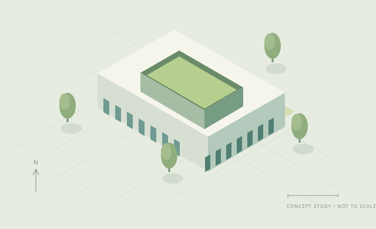

BY REGION
SCHOOL ARCHITECTURE OBSERVATORY
학교 공간의 변화,
사례에서 발견하다.
지역과 학교급으로 설계 사례를 살펴보고,
공간을 만드는 생각과 그 근거를 함께 확인하세요.

SPACE FOR LEARNING · 개념 일러스트어떤 학교 공간을 찾고 있나요?
예시 자료를 불러오는 중입니다…
자료 확인 사항
자료 범위 확인 중
지역 참여 · 건
OVER TIME
시간에 따른 설계 사례
DESIGN ARCHIVE
학교 공간의 다양한 가능성
ABOUT THIS DATA
숫자보다 먼저,
출처를 확인합니다.
처음 열리는 자료는 화면 검증용 가상 예시입니다. 공통 입력·정제·집계 모듈에 연결되어 같은 사업의 기사와 설계사업을 구분합니다. 실제 자료의 출처 확인과 수집은 별도 단계입니다.
전국 자료 자동 수집 · 미래 예측 · 월별 자동 갱신은 제공하지 않습니다.
규격 v0.1, is_demo: true인 JSON을 최대 1 MB까지 브라우저 안에서 읽습니다. 입력 오류가 있으면 이전 자료와 조회 조건을 유지하고, 경고는 확인 사항으로 표시합니다.